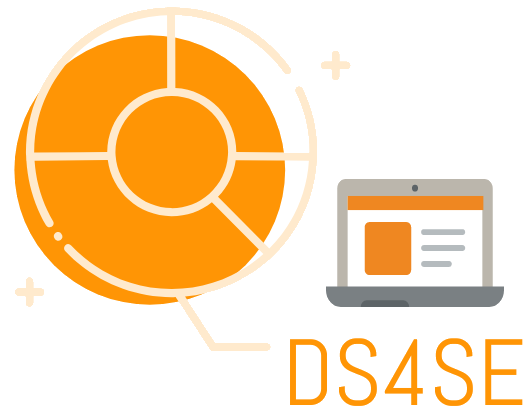

Data Science for Software Engineering
The goal of this project is to teach statistical data analysis to software engineering students using software engineering questions and data as examples.
- Coding Bootcamps: What affects income?
- Stack Overflow trends over time
- Analyze This! ggplot2 warmup dplyr wilcox test academic industry finished
- Bayesian vs Frequentist Statistics
- Developer Performance and Designing a New Grading System for Teams
- Curiosity and Play warmup
- How Many Repositories Are There on GitHub?
- Code Quality and Lines of Code
- Number of Lines versus Number of Functions in Different Languages
- When Will I Be Done This Project?
- Sleep Deprivation and Software Engineering Performance
- Does It Really Matter to Test First or Test After?
See Also
- Our license allows you to use this material however you want, provided you cite us as the original source.
- Contributions are very welcome, from questions and corrections to new material. All contributors are required to abide by our Code of Conduct.
- Please see our glossary for terms used in these lessons.
About This Project
The software engineering world is full of claims about best practices, languages, packages, styles, and workflows, but most software engineering students are never taught how to find, read, and interpret actual evidence on those topics. Is agile development really the secret to success? Do some languages actually cause more defects than others? We have created a series of meaningful lessons that explore research in software engineering for the beginner R programmer. These lessons teach students to interpret and replicate research findings while learning meaningful results for their field in addition to common statistical methods. The lessons serve as a primer for software engineers to participate in a data-driven society; from advertising and business to combating misinformation and helping user experience.
Each lesson uses the R programming language, but does not assume any prior experience. The lessons cover introduction to R syntax, data cleaning and wrangling, data visualization, statistical tests, some predictive modeling, experimental methods, how to read academic research, and key findings from software engineering research.
These lessons are intentionally written colloquially. Far too many resources are written without remembering to help the learner laugh and find joy in their work. While you may not find all of the jokes funny, keep in mind that the author sure tried.